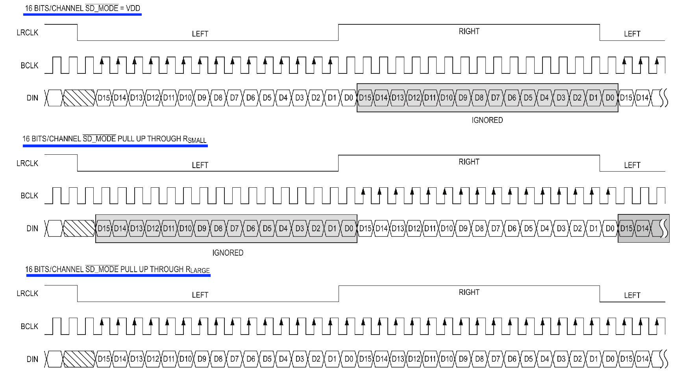

การใช้งานโมดูลขยายเสียง MAX9835A ร่วมกับ ESP32#
▷ โมดูลขยายเสียง MAX9835A#
คุณสมบัติของโมดูล MAX98357A:
- MAX98357A (Datasheet) เป็นชิป Digital-to-Analog Converter (DAC) + Power Amplifier
- ใช้แรงดันไฟเลี้ยงได้ในช่วง 2.5V - 5.5V
- มีประสิทธิภาพการทำงานสูงถึง 92% (Efficiency)
- ใช้กับลำโพงที่มีค่าอิมพีแดนซ์ 4Ω หรือ 8Ω
- สามารถจ่ายกำลังขับสูงสุด 3.2W ให้กับลำโพง 4Ω เมื่อใช้ไฟเลี้ยง 5V
- รองรับการเลือกแชนแนลเสียง:
- รับข้อมูลเสียงแค่ช่อง Left หรือ Right ได้
- เลือกให้รวมเสียงทั้งสองช่องเป็นค่าเฉลี่ย (Left + Right)/2 สำหรับใช้งาน Mono
- รับข้อมูลเสียงผ่านอินเทอร์เฟซ I2S
- ไม่ต้องใช้สัญญาณ MCLK
- รองรับอัตราการชักตัวอย่างเสียง Sample Rate: 8kHz~96kHz
- ภายในมีวงจร Class D Amplifier ทำงานแบบ Switching พร้อมฟิลเตอร์กรองภายใน
- มีระบบ Pop and Click Suppression ลดเสียงดังตอนเปิด/ปิด
- มีขา GAIN สำหรับเลือกระดับการขยายเสียงได้: 9dB (default)
รูป: บล็อกไดอะแกรมแสดงองค์ประกอบที่สำคัญของชิป MAX98357A
รูป: ตัวอย่างโมดูล MAX98357A
รูป: ตัวอย่างผังวงจรของโมดูล MAX98357A

รูป: การเลื่อนบิตข้อมูลในโหมดต่าง ๆ ของชิป MAX98357A ด้วยอินเทอร์เฟซ I2S (กรณีที่ใช้ข้อมูลขนาด16 บิต)
ขาของโมดูล MAX98357A I2S
| ขา | คำอธิบาย |
|---|---|
| LRC | Left Right Clock |
| BCLK | Bit Clock Input |
| DIN | Digital Data Input |
| GAIN | Gain Select (VDD = 6dB, GND = 12dB) |
| /SD_MODE | Shutdown (Active-low, < 0.16V) & Mode Selection |
| GND | Supply Ground |
| VIN | Supply Voltage |
ขา GAIN สามารถต่อตัวต้านทานไปยัง GND เพื่อกำหนดอัตราขยาย:
- 15dB: ต่อตัวต้านทาน 100kΩ ระหว่างขา
GAINกับGND - 12dB: ขา
GAINต่อไปยังGND - 9dB: N.C. (Default)
- 6dB: ขา
GAINต่อไปยังVCC - 3dB: ต่อตัวต้านทาน 100kΩ ไปยัง
VCC
ขา \SD_MODE มีการต่อตัวต้านทาน Pull-up ไปยัง VCC
(และภายในชิป มีตัวต้านทานแบบ Pull-down 100kΩ)
ดังนั้นแรงดันไฟฟ้าที่ขานี้จึงเป็นสัญญาณแอนะล็อก และนำไปใช้เปรียบเทียบกับแรงดันไฟฟ้าภายใน
เพื่อเลือกโหมดเอาต์พุตจาก 3 กรณี
- ตัวต้านทานที่มีค่าน้อย หรือ ต่อตรงกับ VCC (วัดแรงดันได้มากกว่า 1.4V): Left Mode ใช้ข้อมูลเฉพาะช่องซ้ายเป็นเอาต์พุต
- ตัวต้านทานที่มีค่ากลาง เช่น 330KΩ (วัดแรงดันได้มากกว่า 0.77V แต่น้อยกว่า 1.4V): Right Mode ใช้ข้อมูลเฉพาะช่องขวาเป็นเอาต์พุต
- ตัวต้านทานที่มีค่ามาก เช่น 680KΩ หรือมากกว่า (วัดแรงดันได้มากกว่า 0.16V แต่น้อยกว่า 0.7V): (L+R)/2 Mode ใช้ข้อมูลทั้งสองช่องมาเป็นค่าเฉลี่ยสำหรับเอาต์พุต
โมดูลที่ได้นำมาใช้งาน มีการต่อตัวต้านทาน 105 หรือ 1MΩ ดังนั้นจึงเป็นการใช้เอาต์พุตผสม
(L+R)/2 แต่ถ้ามีการต่อขา \SD_MODE เข้ากับ GND (ลอจิก LOW และแรงดันต่ำกว่า 0.16V) จะเข้าสู่โหมด Shutdown
▷ ตัวอย่างโค้ด Arduino ESP32: UDP Server#
โค้ดตัวอย่างต่อไปนี้ จะทำให้ ESP32 คอยรับข้อมูลเสียงจากเครือข่าย Wi-Fi ในรูปแบบ UDP
ซึ่งในกรณีนี้ ESP32 จะทำหน้าที่เป็น UDP Server (ตั้งค่าหมายเลขพอร์ตไว้ที่ 9000)
หลังจากที่เชื่อมต่อกับ Wi-Fi Access Point ได้แล้ว
เมื่อได้รับ UDP แต่ละครั้ง ซึ่งภายในมีข้อมูล จำนวน 512 ตัวเลข ขนาด 16 บิต (16-bit int)
ก็จะส่ง UDP ที่มีข้อความ ACK (Acknowledgement) กลับไปหาต้นทาง
เพื่อยืนยันว่ารับแพ็กเก็ตแล้ว
จากนั้นส่งข้อมูลเสียงที่ได้รับ ไปเล่นผ่าน I2S เป็นเอาต์พุตออกลำโพงที่ต่อกับโมดูลขยายเสียง MAX98357A (หรือโมดูล I2S DAC อื่นๆ)
ในตัวอย่างนี้มีการใช้ FreeRTOS ในการแยกงานเป็น 2 งานย่อย (Tasks) เพื่อทำงานไปพร้อมๆ กัน (Multitasking) มีการใช้งาน FreeRTOS Queue เพื่อใช้เป็นบัฟเฟอร์เก็บข้อมูลเสียง และสื่อสารข้อมูลกันระหว่างทาสก์ทั้งสอง
task_udp_receive:- ทำหน้าที่รอรับ UDP Packet ซึ่งมีขนาด 512 samples × 2 bytes = 1024 bytes
- ข้อมูลเสียงได้จากการชักตัวอย่างที่อัตรา (Sample Rate) เท่ากับ 16kHz
- เมื่อรับข้อมูลครบตามจำนวนไบต์จะนำข้อมูลใส่ FreeRTOS Queue เพื่อส่งให้อีกทาสก์หนึ่งประมวลผลต่อไป
- ส่ง ACK กลับไปยังผู้ส่งทันที ในรูปแบบของ UDP Packet
task_i2s_write:- ดึงข้อมูลเสียงจาก FreeRTOS Queue
- ขยายสัญญาณ (เพิ่ม gain) และจำกัดค่าแอมพลิจูด ให้อยู่ในช่วงที่ 16-bit signed int รองรับ
- ส่งข้อมูลไปยัง I2S DAC
การใช้งาน I2S Peripheral ของ ESP32 (มีให้เลือกใช้ 2 ชุด) ในกรณีนี้จะใช้สำหรับเอาต์พุต ก็ทำได้ง่าย
โดยใช้คำสั่งของไลบรารี ESP_I2S และจะต้องตั้งค่า เพื่อเลือกใช้ขา GPIO
สำหรับ BCLK, LRC และ DIN เพื่อนำไปใช้กับโมดูล MAX9835A ตามที่ต้องวงจรใช้งานจริง
การตั้งค่า I2S ก็เลือกใช้โหมดมาตรฐาน (Standard) มีความละเอียด 16 บิต โหมดโมโน (Mono)
ในตัวอย่างนี้ได้เลือกขา GPIO ของ ESP32 ดังนี้
LRC_PIN: GPIO 25DIN_PIN: GPIO 26BCLK_PIN: GPIO 27
#include <Arduino.h>
#include <ESP_I2S.h>
#include <WiFi.h>
#include <WiFiUdp.h>
#include "secrets.h" // Define WIFI_SSID and WIFI_PASSWD
#if ESP_ARDUINO_VERSION < ESP_ARDUINO_VERSION_VAL(3, 0, 0)
#error "Please use Arduino ESP32 Core v3.0.0 or higher..."
#endif
#define LED_PIN (5) // Onboard LED pin
#define LED_ON (0) // Active-low LED
#define LED_OFF (!LED_ON)
// MAX98357A I2S Audio Amplifier (3.3V supply) connected to a speaker (5W / 8Ω)
#define LRC_PIN (25)
#define DIN_PIN (26)
#define BCLK_PIN (27)
const int queue_size = 8;
const int SAMPLE_RATE = 16000; // sample rate in Hz
const int NUM_SAMPLES = 512;
const int SERVER_PORT = 9000;
// Create a queue handle
QueueHandle_t sample_queue;
WiFiUDP udp;
I2SClass i2s_out;
// Struct to hold one chunk of samples
typedef struct {
int16_t samples[NUM_SAMPLES];
} audio_chunk_t;
// WiFi connection
void connect_wifi() {
WiFi.mode(WIFI_STA);
WiFi.begin(WIFI_SSID, WIFI_PASSWD);
Serial.print("Connecting to WiFi");
while (WiFi.status() != WL_CONNECTED) {
delay(100);
digitalWrite(LED_PIN, !digitalRead(LED_PIN));
Serial.print(".");
}
digitalWrite(LED_PIN, LED_OFF);
Serial.println();
Serial.print("Connected IP: ");
Serial.println(WiFi.localIP());
}
// FreeRTOS task for UDP Receiving
void task_udp_receive(void *parameter) {
for (;;) {
int packetSize = udp.parsePacket();
if (packetSize == (NUM_SAMPLES * sizeof(int16_t))) {
audio_chunk_t chunk;
int len = udp.read((char*)chunk.samples, sizeof(chunk.samples));
if (len == sizeof(chunk.samples)) {
if (xQueueSend(sample_queue, &chunk, 100) != pdTRUE) {
Serial.println("Queue full, dropping audio packet!");
}
else {
udp.beginPacket(udp.remoteIP(), udp.remotePort());
udp.write((const uint8_t *)"ACK", 3); // Send "ACK" (3 bytes)
udp.endPacket();
}
}
}
delay(1);
}
}
// FreeRTOS Task for Audio I2S Output
void task_i2s_write(void *parameter) {
audio_chunk_t chunk;
for (;;) {
// Wait for a chunk from queue
if (xQueueReceive(sample_queue, &chunk, portMAX_DELAY) == pdTRUE) {
float gain = 1.2f; // Amplification (gain > 1.0)
for (int i = 0; i < NUM_SAMPLES; i++) {
int32_t temp = chunk.samples[i] * gain; // Apply gain
// Clamp the amplitude
if (temp > 32767) temp = +32767;
if (temp < -32768) temp = -32768;
chunk.samples[i] = (int16_t)temp;
}
// Output to I2S
i2s_out.write((const uint8_t *)chunk.samples, sizeof(chunk.samples));
}
delay(1);
}
}
void init_i2s_out() {
// Initialize I2S
i2s_out.setPins(BCLK_PIN, LRC_PIN, DIN_PIN, -1, -1);
bool success = i2s_out.begin(I2S_MODE_STD, SAMPLE_RATE,
I2S_DATA_BIT_WIDTH_16BIT, I2S_SLOT_MODE_MONO);
if (!success) {
Serial.println("Failed to initialize I2S!");
while (true);
}
}
void setup() {
Serial.begin(115200);
delay(2000);
pinMode(LED_PIN, OUTPUT);
digitalWrite(LED_PIN, LED_OFF);
Serial.println("\n\nESP32 I2S DAC + WiFi UDP Server + FreeRTOS Demo...");
Serial.flush();
// Initialize I2S
init_i2s_out();
// Connect WiFi
connect_wifi();
// Start UDP server
udp.begin(SERVER_PORT);
Serial.printf("Listening on UDP port %d\n", SERVER_PORT);
// Create a FreeRTOS queue
sample_queue = xQueueCreate(queue_size, sizeof(audio_chunk_t));
if (sample_queue == NULL) {
Serial.println("Failed to create queue!");
while (true);
}
// Create two FreeRTOS tasks running on different CPU cores
xTaskCreatePinnedToCore(task_udp_receive, "UDP Receive", 4096 /*stack size*/,
NULL, 1 /*task priority*/, NULL, 0 /*CPU core id*/);
xTaskCreatePinnedToCore(task_i2s_write, "I2S Write", 8192 /*stack size*/,
NULL, 2 /*task priority*/, NULL, 1 /*CPU core id*/);
}
void loop() {
}
รูป: ตัวอย่างอุปกรณ์ที่ได้นำมาทดลองใช้งาน
ข้อมูลเสียงที่ถูกส่งออกทาง I2S ที่ขา DIN แต่ละตัว มีขนาด 16 บิต (MSB First)
มีเฉพาะสำหรับช่องซ้าย (LRC = 0( และเป็น 0 ทั้งหมดสำหรับช่องขวา (LRC = 1)
หนึ่งคาบสัญญาณ LRC เท่ากับ 32 บิต และมีความถี่เท่ากับ 16kHz
ดังนั้นสัญญาณ BCLK มีความถี่เท่ากับ 512kHz (= )
รูป: ตัวอย่างการวัดคลื่นสัญญาณ ช่อง CH1 และ CH2 (ซ้าย: สัญญาณ BCLK และ DIN, ขวา: LRC และ BCLK)
รูป: ตัวอย่างการวัดคลื่นสัญญาณ ช่อง CH1 และ CH2 (สัญญาณ LRC และ DIN)
▷ ตัวอย่างโค้ด Python: UDP Client#
ลองมาดูตัวอย่างโค้ด Python ที่ทำหน้าที่เป็น UDP Client เชื่อมต่อผ่านเครือข่ายไปยัง
ESP32 และส่งข้อมูลเสียงในรูปแบบ UDP Packet ข้อมูลเสียงจะได้จากไฟล์ .mp3
โดยใช้ไลบรารี pydub ในการอ่านข้อมูลจากไฟล์ ซึ่งต้องเรียกใช้โปรแกรมภายนอกที่มีชื่อว่า ffmpeg (ต้องติดตั้งโปรแกรมนี้เพิ่มด้วย)
โค้ดตัวอย่างนี้ จะอ่านข้อมูลจากไฟล์เสียงต้นฉบับมีนามสกุล .mp3 และต้องแปลงให้อยู่ในรูปแบบที่ตรงกับ ESP32 ที่คาดหวัง ได้แก่ Mono 16-bit PCM, 16kHz ข้อมูลเสียงจะถูกส่งไปทีละชุด ๆ ละ 512 ตัวอย่าง (Samples) หรือ 1024 ไบต์ ต่อแพ็กเก็ต
# $ pip install pydub numpy
# Ubuntu: sudo apt install ffmpeg
# Windows: install ffmpeg and add to PATH
import socket
import time
from pydub import AudioSegment
from pydub.playback import play
import numpy as np
MP3_FILENAME = "song.mp3" # <-- specify the MP3 filename
UDP_SERVER_IP = '192.168.100.115' # <-- replace with your ESP32 IP
UDP_SERVER_PORT = 9000 # UDP server port
SAMPLE_RATE = 16000 # audio sample rate
CHUNK_SIZE = 512 # number of samples per chunk
# Load and decode the MP3
song = AudioSegment.from_file(MP3_FILENAME, format="mp3")
# Convert to required format: mono, 16kHz, 16-bit PCM
song = song.set_channels(1) # Use mono channel
song = song.set_frame_rate(SAMPLE_RATE) # Set sample rate
song = song.set_sample_width(2) # Convert to 16-bit samples
# Play the song locally
#play(song)
# Prepare audio data
audio_data = np.array(song.get_array_of_samples(), dtype=np.int16)
print(f"Decoded MP3 song: {len(audio_data)} samples")
scale_factor = 0.2
audio_data = audio_data * scale_factor
audio_data = np.clip(audio_data, -32768, 32767).astype(np.int16)
# Create UDP socket
sock = socket.socket(socket.AF_INET, socket.SOCK_DGRAM)
sock.settimeout(0.05) # Set UDP socket timeout
def send_audio():
print( f"Start sending to ESP32..." )
idx = 0 # Reset sample index
total_samples = len(audio_data)
retry_count = 0
while idx < total_samples:
end_idx = idx + CHUNK_SIZE
chunk = audio_data[idx:end_idx]
# If last chunk is small, pad with zeros
if len(chunk) < CHUNK_SIZE:
chunk = np.pad(chunk, (0, CHUNK_SIZE - len(chunk)), 'constant')
# Send audio chunk
remote_server = (UDP_SERVER_IP, UDP_SERVER_PORT)
sock.sendto(chunk.tobytes(), remote_server)
try:
# Wait for ACK
data, addr = sock.recvfrom(16) # Buffer size max. 16 bytes
if data == b'ACK':
# Correct ACK received
idx += CHUNK_SIZE
retry_count = 0
time.sleep(0.005) # Small sleep to avoid flooding
else:
print(f"Unexpected response: {data}")
except socket.timeout:
retry_count += 1
if retry_count > 100:
break
time.sleep(0.01)
print("ACK timeout! Resending same chunk...")
print("Finished sending audio.")
try:
send_audio()
except KeyboardInterrupt:
print("\nTerminated...")
finally:
sock.close()
▷ กล่าวสรุป#
บทความนี้ได้นำเสนอตัวอย่างการทดลองใช้งานโมดูลขยายเสียงที่ใช้ชิป MAX9835A และเชื่อมต่อด้วยอินเทอร์เฟซ I2S และได้ทดลองเขียนโค้ด Arduino สำหรับบอร์ด ESP32 เชื่อมต่อผ่าน Wi-Fi ได้ และเขียนโค้ด Python เพื่อส่งข้อมูลเสียงในไฟล์ .mp3 จากคอมพิวเตอร์ของผู้ใช้ ไปยังบอร์ด ESP32 และสร้างสัญญาณเสียงเอาต์พุตออกทางลำโพงเสียง
This work is licensed under a Creative Commons Attribution-ShareAlike 4.0 International License.
Created: 2025-04-27 | Last Updated: 2025-04-27